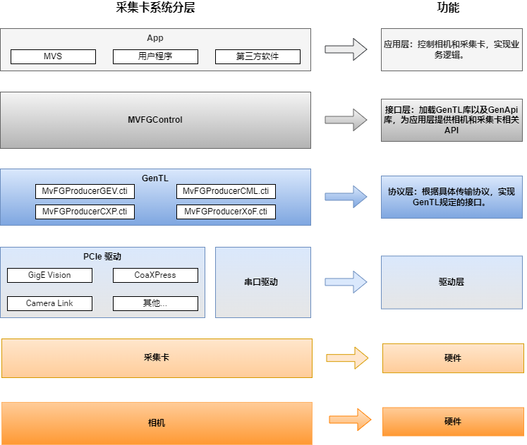

概述
工业采集卡SDK开发指南主要对API的使用进行说明。API库为所有采集卡提供统一的访问控制接口，可简化接口调用，支持多种类型卡同时使用。
目前支持GigE Vision采集卡、CoaXPress采集卡、Camera Link采集卡和XoFLink采集卡，其接口主要分为版本信息接口、初始化及释放接口、采集卡接口、相机接口、图像采集接口、图像处理接口、通用接口以及事件接口，为用户使用软件设计提供较高的自由度。
开始使用
| 更新记录 | 记录SDK各版本的主要更新情况。 |
| 编程引导 | 介绍C接口的基本使用流程。 |
| 接口及数据结构 | 介绍C的接口函数及数据结构。 |
| 示例程序 | 介绍常见用例和接口基本的使用方法。 |
| 错误码 | 介绍接口函数返回的错误码定义，方便程序出现问题时进行排查。 |
运行环境
| GigE Vision采集卡 |
| 硬件配置：PCI-E gen2 × 4 |
| 软件环境：Ubuntu16.04/18.04/20.04/22.04 x86_64bits操作系统 |
| CoaXPress采集卡 |
| 硬件配置：PCI-E gen2 × 8（CoaXPress-6采集卡）、PCI-E gen3 × 8（CoaXPress-12采集卡） |
| 软件环境：Ubuntu16.04/18.04/20.04/22.04 x86_64bits操作系统 |
| Camera Link采集卡 |
| 硬件配置：PCI-E gen2 × 4 |
| 软件环境：Ubuntu16.04/18.04/20.04/22.04 x86_64bits操作系统 |
| XoFLink采集卡 |
| 硬件配置：PCI-E gen2 × 8 |
| 软件环境：Ubuntu16.04/18.04/20.04/22.04 x86_64bits操作系统 |
总体层次结构
